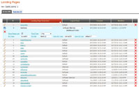
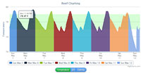

Helped build and add features to this shopping site. It gets its products via Craigslist but also allows registered members to create their own items indepenedent of Craigslist. The user experience adds much needed features on top of Craigslist. You can add items to your favorites and block items from showing up in search results. Both very useful features for anyone who's ever used Craigslist. The site is based on Twitter's Bootstrap and makes heavy use of jQuery. The site scales very well and is perfectly suited for tablets and phones, not just PCs.
This site makes heavy use of jQuery and jQuery plugins to display content for featured designers promoting Microsoft's PowerPoint. The goal was to create visually appealing, interactive design without using Flash. I used FlowPlayer's jQuery Tools to scroll the content as well as Eric Martin's Simple Modal.
I also wrote extensive jQuery to handle hover events that cause objects to slide up/down and to change images using a fade in/fade out technique. Content for the site is pulled from a SQL Server database and output with repeaters to display individual artist content. jQuery then toggles the artist info based on which artist is selected.
I was given a design for the site as a PSD file and tasked with converting it to a pixel perfect, cross-browser website. Naturally, after the client saw it, they requested multiple changes from the design which I accommodated. The site was served as a Facebook app inside an iframe.
This site was originally built using .NET Web Forms using DataTables and Repeaters to output the artist's images and biography text. I converted it to MVC for this portfolio site and used Lists of artist objects for iteration.
Capella University
I did all the site building for this as well as implemented a content management system in order to display different versions of this page triggered by the querystring.
There are over 40 different versions of the site (PhD,
NextSteps, Military).
I also maintain the form and write JavaScript/C# form validation to ensure fields are filled in correctly. The form itself is served by a SOAP webservice which populates some fields from a database.
Once the form passes javascript validation, the form values are fed to the middle tier level, which first validates (again), then saves the data to a database and then finally it transmits that data to the school.
This site uses Omniture's Test & Target to randomly display different content to each user, and then records which versions have higher form conversion rates. Using Test & Target, Capella can have its users
change content (images or text) on each landing page to perform A/B testing to see which content performs better.
As part of a team of developers, we rebuilt the Washington Lottery website in early 2010. Previously it was several projects shoehorned together, comprising classic ASP, .NET 1.1 and .NET 2.0 projects.
It was a nightmare to maintain. Our rebuild got all the parts into one .NET 3.5 project where it's significantly easier to maintain now. I did extensive development on the Player's Club section, which allows you to register,
modify email subscriptions and sign up for winning number notices. We optimized the code and converted all data calls to Linq to SQL instead of inline SQL or stored procedures.
I also played a large role in developing an admin site for the Washington Lottery. This admin site (not publically available for obvious reasons) allows users to change many aspects of the Washington's Lottery website.
For example, the admin site allows you to change which ads show up on the home page and allows entering or modifying of winner's info (name, city, what store sold their ticket, etc.). This admin site is .NET 3.5 based, using C# to interact with a SQL Server database.
For this site I was mostly only involved with site building (HTML, CSS and JavaScript). This site is available in several languages (accessible via the dropdown list at top right). Although some of the languages are redundant (Portugal and Brazil or Spain and Latin America) the site uses virtual directories to serve up identical content for those, rather than having each one coded twice.
I also built an admin tool for 3LCD users to manipulate press releases and reviews for their projectors. This tool works with all regions and allows the user to add/edit/disable a review or press release in any of the regions displayed by the 3LCD website.

I have lots of experience working with .NET web controls that output data from SQL databases and allow the user full interactivity with the data.
The ListView control is one of my favorites, because it has edit and insert templates built in to the control. Combined with an object data source control, it's very easy to get
data from a stored procedure and enable paging and sorting of that data. I customized the ListView control so that it automatically finds the column header names and changes the class
of those column headers when sorted, so that it's easy to see which column is currently the sort column and in which direction it's currently sorted.

Using Highcharts, I display logged information for my reef tank for temperature, pH and salinity.
The charts show the range of values throughout the day for a week.
This allows me to easily pinpoint problems in the system even if I'm not around when they occur. For example if the temperature drops down too low at night, I know there's a problem with the heater.
If the salinity values fluctuate too much, there's a problem with the auto top-off system (it automatically adds freshwater when the tank level drops due to evaporation). You may be thinking, "why do you add freshwater to a saltwater tank to replace evaporated water? Doesn't that reduce the salinity?" The answer is that when water evaporates, anything in the water is left behind. So, when saltwater evaporates, the salt is left behind in the remaining water, resulting in the remaining water having a higher concentration of salt. This is what has happened to the Great Salt Lake and the Dead Sea. Both are very salty now due to evaporation.
The charting also demonstrates that pH in an aquarium builds throughout the day as corals photosynthesize light. This results in pH being lowest in morning, and highest around 9pm. In my system, it generally varies from around 7.9 in the morning to 8.5 at night. Similarly, temperature is lowest in the morning before the lights turn on. I use 2 metal halide lamps which add a lot of heat to the tank. The fans can only cool it so much, so the heat builds throughout the day. The controller is configured to shut off the lights if the water gets above 82 degrees, so there's no worry of overheating now.
Using the same xml, I also created a HTTP handler that creates a PNG image with the current stats in the aquarium. I then took my own photos of fish and corals from the tank and used them in the image. The image is chosen at random from 3 possible images every page load.

I designed and built this site for a friend of mine who also enjoys reef aquariums. It's built in C# and integrated with a SQL Server database. It showcases Dang's amazing 240 gallon reef tank, which is loaded with beautiful and difficult to keep corals. The site has a photo gallery, for which I built an admin tool so that Dang can upload his own photos, place it in a gallery and maintain those galleries, all without having to know anything about how the site is built (that way he doesn't have to bother me to do it for him).